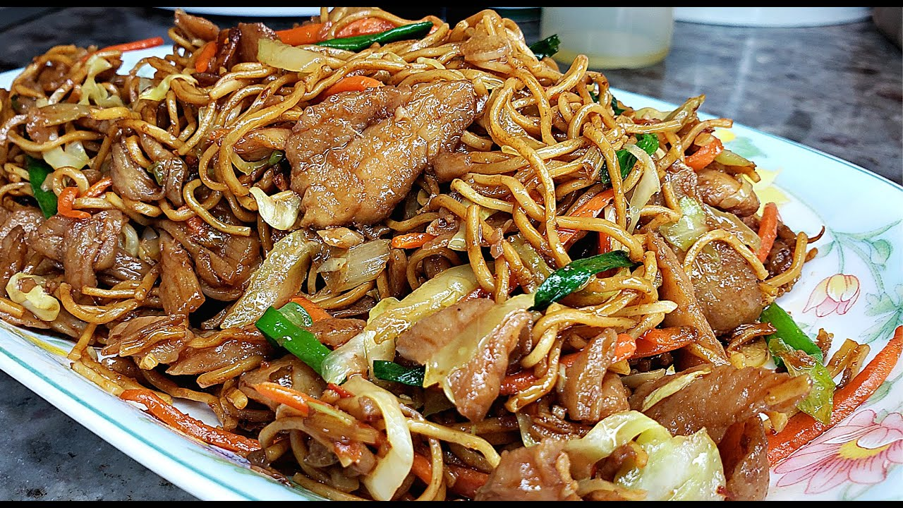

Chicken Chowmein Recipe

Description
Chowmein is a very popular dish eaten for lunch or dinner
Ingredients
- 1 medium yellow onion sliced
- 3 green chili sliced
- 4 green onion leaves
- 60g Egg Noodles (or Spaghetti Noodle)
- 100 g Chicken Breast
- 200 g cabbage chopped
- 150 g broccoli chopped
- 150 g carrots chopped
- 50g green beans sliced
- 100g green peas
- 2 tbsp. dark soy sauce
- 1 tbsp. rice vinegar
- 2 tbsp. ketchup
- 1 tbsp. hot sauce
- ½ tsp. salt
- ½ tsp. red chili powder
- 2 tsp. cumin powder
- ½ tsp. black pepper
- 3 tbsp. oil
- 1 tbsp. lemon juice
- Cilantro for garnish
Steps
- Boil water and cook noodles.
- Once it is cooked, strain out and run cold water through the noodles to stop over cooking.
- Add some oil to prevent sticking and set it aside.
- Heat up oil in a pan and sauté chicken strips.
- Add salt and pepper, cook for 5-6 minutes and set it aside.
- In a wok, heat oil and sauté onions for a minute and add vegetables.
- Add cooked chicken and then the noodles.
- Put soy sauce, vinegar, ketchup, hot sauce, salt and pepper, red chili powder, cumin powder.
- Cook for 3 minutes, add some lemon juice and cilantro.
- It is ready to be served.
All Recipes